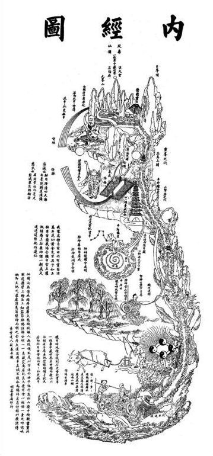

房中術 ― 房事を養生として捉えた伝統
房中術（ぼうちゅうじゅつ）は、房事――男女の交わり――を、快楽や生殖のためだけの行為ではなく、気をめぐらせ生命を養う営みとして捉えた、中国伝統の養生術の一分野です。「房中」は寝室のことです。前漢の目録学『漢書』芸文志は、当時の技術と学芸を「方技」にまとめ、医経・経方・房中・神仙の四部門を並べました。房中は医学と神仙（長生の術）のあいだに置かれ、正規の学問分野の一つとして扱われていたことが分かります。導引や行気（呼吸の術）が一人で気をめぐらす術だったのに対して、房中術は男女の気を合わせる方法をとった点に特徴があります。気功の源流をたどると、導引・吐納と並んで、房中もまた無視できない一本の流れです。
文献と歴史
房中術の最古の実物資料は、長沙・馬王堆三号漢墓（紀元前168年に埋葬）から1973年に出土した帛書・竹簡群です。ここには『合陰陽』『天下至道談』『十問』といった房中を主題とする文献が含まれており、房中術が前漢の時点で、すでに損益の理論や行いの型を持つ体系として成立していたことが、伝説ではなく出土物で裏付けられました。
後世の房中書の中心になったのは、黄帝が女仙に問う問答体の書々です。『素女経』は素女、『玄女経』は玄女、『玉房秘訣』は素女らが答える形をとります。これらの原本は散逸しましたが、隋唐期の医書や、日本の丹波康頼『医心方』（984年）巻二十八「房内篇」が大量の引用を保存したため、内容の骨格は今も読むことができます。日本最古の医学書が、房中を正式な一巻として扱っている点も、この分野の当時の位置づけを物語ります。
医家と養生家の側でも、房中は正規のテーマでした。葛洪『抱朴子』は房中を長生の術の一つに数え、陶弘景『養性延命録』には「御女損益」の篇があり、孫思邈『千金要方』巻二十七「養性」には「房中補益」の章が置かれています。江戸期の日本の養生書や房中書にもこの系譜は受け継がれ、現在も『素女妙論』など房中書を対象とする学術研究が続いています（末尾の参考文献）。
基本の考え方
精を貴ぶ
房中術の中心にあるのは、精を有限で貴重なものとみる身体観です。伝説の養生家・彭祖の言葉として、「精を愛しみ、神を養う」ことが伝えられ、『素女経』系の文献は「瀉精をたびたびしない」ことを繰り返し説きます。精は生まれながらに蓄えた命の元手であり、その出納をどう管理するかが、房中の実践全体の課題でした。この「精を漏らさない」という発想は、後の内丹の「精を化して気となす」錬成へとつながっていきます。
還精補脳
「還精（かんせい）」は、房中術を象徴する思想です。交わっても精を漏らさず、気を脊の内側を上らせて脳を補う、とされました。『素女経』系の言葉として「動いて施さないのが還精である。還精すれば補益となり、生の道が明らかになる」と伝わります。還精補脳は、性的な興奮に伴う気を体内に循環させるという伝統的な身体イメージであり、内丹の小周天や「精・気・神」の錬成と同じ発想の土台の上にあります。

陰陽の調和 ― 相手の状態を読む
房中術は、一方的な技術ではありません。素女は交接の要を「定気・安心・和志」――気を定め、心を安んじ、志を和らげること――と説いたと伝わります。『玄女経』の「四至」は男性側の気の至り方を、「九気」は女性側の気の至り方を、それぞれ段階に分けて読む枠組みです。古典の房中書が一貫して相手の悦びと応答を成立の条件に置くのは、陰陽はどちらか一方だけでは巡らないという、この調和の思想によります。
七損八益
馬王堆『天下至道談』に説かれるのが「七損八益」の枠組みです。気を損なう行いを七つ（七損）、気を益する行いを八つ（八益）に分けて対比し、「七損を避け、八益を行う」ことが房中の指針とされました。『黄帝内経』にも「七損八益を知れば調えることができる」とあり、その実体は長く不明でしたが、馬王堆の出土で内容が判明しました。後世の『玉房秘訣』はこれを受けて、八益と七損を具体的な行いの処方として展開します。全項目は実践法の節で紹介します。
実践法
ここからは、古典が説く実践の具体を、文献ごとに省略せずに紹介します。房中書の実践は、構えと手順、相手の兆しを読む法、型（体位）、益と損の処方、精を還す技法、頻度と禁忌から成り立っています。いずれも伝統の枠組みの中の記述であり、効果の言説も含めて「古典はこう説く」という形で挙げます。現代医学の観点からの注意は、末尾の「現代からの見方」と「注意」にまとめました。
構えと臨御の作法 ― 『素女経』
実践の土台は「定気・安心・和志」です。気を定め、心を安んじ、志を和らげる。三気が皆至れば神明が統帰し、寒からず熱からず、飢えず飽きず、身を寧（やす）んじ体を定め、性（行い）は舒（ゆる）やかで遅く、浅く内れて徐々に動かし、出入は希（まれ）にする。女が快く、男が盛んで衰えない。これを節（さだめ）とする――これが『素女経』の説く交接の基本形です。
臨御（実際に臨むこと）の手順は、さらに具体的に書かれています。まず婦人に身を安らかに横たえさせ、両脚を屈げさせる。男はその間に入り、口を合わせて舌を吸い、手で自身を撫で、門戸（女陰）の東西の両傍を撃つ（やさしく刺激する）こと、食頃（食事一回分ほどの時間）をかける。それから徐々に内入れる。内れる深さは相手と自身の大きさで加減し、大きい者は半寸、弱小な者は一寸ほどにとどめ、揺り動かさない。徐々に出しては更に入れる。玉門に入れば自然に熱を生じて急になり、婦人の身が自ら動き、男と相得るようになってから、初めて深くする。浅く「琴弦」（入口に近い浅い部位の古典名。現代ではGスポットに重ねて語られることがある）を刺すこと三寸半、口を閉じて一、二、三と九まで数えながら刺し、次第に深くして「昆石」（奥の部位の古典名。現代ではポルチオ（子宮口付近）に重ねて語られることがある）の傍らを行き来し、口を婦人の口に当てて気（息）を吸う。この「九九の道」を行うのが、古典の説く臨御の作法でした。
『玄女経』は、始める前の心の一致を重ねて戒めます。男が接したいのに女が楽しまない、女が接したいのに男が欲しない――二心が和さなければ精気は感じ合わない。そこへ「卒上暴下」（荒々しく臨むこと）をすれば、愛楽は施されない。情意が合同し、ともに悦ぶ心があって初めて、女の質は振るい感じ、男の茎は盛んに熱し、精液は流れ溢れる、と説きます。
兆しを読む ― 四至・九気
『玄女経』の「四至」は、男性側の気の至り方を四段階に分けたものです。玉茎（陰茎）が怒らない（勃ち上がらない）のは和気が至らないため、怒っても大きくならないのは肌気が至らないため、大きくても堅くならないのは骨気が至らないため、堅くても熱くならないのは神気が至らないため。「怒るは精の明（あきらかさ）、大なるは精の関、堅きは精の戸、熱きは精の門」であり、四気が至って初めて行うべきで、気が至らないのに強いて用いることはできない、と説きます。
対になる「九気」は、女性側の気の至り方を読む枠組みです。『医心方』に引く『玄女経』は九気と総称し、具体的な兆しとして次の八つを挙げます。
- 肺気：大きく息をして、唾を嚥む。
- 心気：声を漏らして、男を吸う。
- 脾気：抱いて、男を離さない。
- 腎気：陰門が滑らかに潤う。
- 骨気：しきりに、男に噛みつく。
- 筋気：足で、男を拘える。
- 血気：玉茎を、撫で弄ぶ。
- 肉気：男の乳を、持ち弄ぶ。
九気が皆至るのが望ましく、至らない気があれば相手を傷つけかねないので、数を以て行って治す（回を重ねて至らせる）と説かれています。
兆しを読む ― 五徴・五欲・十動
『玉房秘訣』は、女性の快を観る手がかりとして「五徴・五欲・十動」を説きます。五徴には、それぞれ男側の応じ方までが対で書かれています。
| 五徴（兆し） | 応じ方 |
|---|---|
| 一、顔が赤らむ | 徐々に合わせる |
| 二、乳が堅くなり、鼻に汗ばむ | 徐々に内れる |
| 三、喉が乾いて、唾を嚥む | 徐々に揺らす |
| 四、陰が滑らかになる | 徐々に深くする |
| 五、尻に液が伝う | 徐々に引く |
五欲は、欲求の深まりを読む五つの応答です。一に意欲得たりとすれば息を屏（とど）める、二に陰欲得たりとすれば鼻と口がともに開く、三に精欲煩わしければ身を振るわせて男を抱く、四に心欲満ちれば汗が流れて衣裳を湿らす、五に快欲甚だしければ身が真っ直ぐになり目を閉じる。
十動は、動きそのものから意を読む十の効（しるし）です。一に両手で人を抱くのは、体を薄く着けて陰を相当てたいため。二に両臂を伸ばすのは、上を擦りたいため。三に腹を張るのは、洩らしたいため。四に尻が動くのは、快く善いため。五に両脚を挙げて人を拘えるのは、深くしたいため。六に両股を交えるのは、内が痒く滔々（とうとう）とするため。七に側へ揺れるのは、深く左右に切られたいため。八に身を挙げるのは、人を迫って揺れ、楽しみが甚だしいため。九に身が縦（ゆる）むのは、肢体が快いため。十に陰液が滑るのは、精がすでに洩れたため。――この効を見て、女の快を知る、と説きます。
最古の型 ― 『合陰陽』の十節
馬王堆『合陰陽』は、十動（行いの段階の数え方）、十節（体位）、十脩（整える所作）、八動（女の応答の兆し）、十已之徴（至った兆し）、そして大卒（大きな至り）という部立てで実践を組み立てた、最古の房中書です。十節の名は『天下至道談』の「十勢」とほぼ重なり、虎遊・蝉附・尺蠖・麕桷（きくかく）・蝗磔（こうたく）・猨据・瞻諸（せんしょ）・兎鶩（とぶ）・蜻蛉・魚嘬（ぎょさく）の十。いずれも獣や虫や魚の名を借りた体位の名で、出土本文には姿勢の詳しい説明はほとんど残らず、名のみが伝わります。この名の列が、後世の九法や『洞玄子』の三十法へと展開していきました。
九法 ― 『玄女経』の九種の型
『玄女経』の「九法」は、体位と動かし方と回数の型を九種に定めたものです。各法には、古典の枠組みの中で、除かれるとされる病の名が添えられています（伝統的な言説として挙げます）。
- 龍翻（りゅうほん）：女が正しく仰臥して上を向き、男がその上に伏す。女が陰を挙げて玉茎を受け、「谷実」を刺し、また上を攻める。疏（まば）らに緩やかに動揺し、八浅二深（八回浅く二回深く）のリズムで、死往生返（弱く往って強く返る）を行う。女は煩悦し、楽しみは倡（うた）のごとく、自ら閉じ固まる。古典は百病が消えると説く。
- 虎歩（こほ）：女が俯伏して尻を仰ぎ首を伏せ、男が後ろに跪いて女の腹を抱え、玉茎を内れて「中極」を刺す。深く密にすることを務め、進退が相薄（あいせま）るようにして、五八（四十）の数を行う。女の陰は閉じたり張ったりし、精液が外に溢れる。終われば休息する。古典は百病が発せず、男が益々盛んになると説く。
- 猿搏（えんはく）：女が仰臥し、男が女の股を担いで、膝が胸を過ぎるまで返し、尻と背をともに挙げさせて、「臭鼠」を刺す。女は煩れて揺れ動き、精液は雨のごとく、男は深く案じて極めて壮んに怒る。女が快くなれば止める。古典は百病が自ら癒えると説く。
- 蝉附（せんぷ）：女が伏臥して体を真っ直ぐに伸ばし、男が後ろに伏して深く内れる。女の尻を少し挙げて「赤珠」を扣（う）つ。六九（五十四）の数を行う。女は煩れて精が流れ、陰の内は動いて急になり、外は開き舒びる。女が快くなれば止める。古典は七傷が除かれると説く。
- 龜騰（きとう）：女が正しく臥して両膝を屈げ、男がその足を乳に至るまで押し、深く内れて「嬰女」を刺す。深浅は度を以てし、その実に中（あ）てる。女は感じ悦んで体が自ら揺れ挙がり、精液が流れ溢れる。深く極めて内れ、女が快くなれば止める。古典は精力が百倍になると説く。
- 鳳翔（ほうしょう）：女が正しく臥して自ら脚を挙げ、男が股の間に跪いて両手を席に着け、深く内れて「昆石」を刺す。堅く熱く内に牽（ひ）き、女に動作させる。三八（二十四）の数を行う。尻が急に相薄（あいせま）り、女の陰が開き舒びて自ら精液を吐く。女が快くなれば止める。古典は百病が消滅すると説く。
- 兔吮毫（とせんごう）：男が正しく反臥（仰臥）して脚を真っ直ぐ伸ばし、女がその上に跨って膝を外側に置き、男の足の方へ背を向けて席に俯（うつむ）き、「琴弦」を刺す。女は快く、精液は泉のごとく流れ出て、欣喜和楽し神形が動く。女が快くなれば止める。古典は百病が生じないと説く。
- 魚接鱗（ぎょせつりん）：男が正しく仰臥し、女がその上に跨って両股を前にし、安らかに徐々に内れる。微かに入れて止まり、纏（まと）って深くしない。児が乳を含むような軽さで、女だけが揺れる。長く持たせることを務め、女が快くなれば男は退く。古典は諸々の結聚（しこり）を治すと説く。
- 鶴交頸（かくこうけい）：男が正しく箕座（あぐら）に座り、女が股に跨って手で男の頸を抱き、玉茎を内れて「麦歯」を刺し、その実に中てる。男は女の尻を抱えて、揺れ挙げるのを助ける。女は自ら感じ快く、精液が流れ溢れる。女が快くなれば止める。古典は七傷が癒えると説く。
八益の実践
『玉房秘訣』の八益は、体位と回数を定めた八つの処方です。いずれも、伝統の枠組みの中で、特定の不調に応じる行いとして書かれています（当時の処方の記録であり、現代医学の治療法ではありません）。
- 固精：女が側臥して股を張り、男が側臥してその中に入る。二九（十八）の数を行い、数が終われば止めて、男は精を固める。伝統的には女子の漏血（不正出血）に応じるとされ、一日に二回行い、十五日で癒えると説く。
- 安気：女が正しく臥して高枕し、両股を伸ばし張り、男が股の間に跪いて刺す。三九（二十七）の数を行い、数が終われば止める。気を和らげるとされ、女門の寒（下腹部の冷え）に応じ、一日に三回、二十日と説く。
- 利蔵：女が側臥して両股を屈げ、男が横臥して却（しりぞ）いて刺す。四九（三十六）の数を行い、数が終われば止める。五臓を利するとされ、女門の寒に応じ、一日に四回、二十日と説く。
- 強骨：女が側臥して左膝を屈げ、右の股を伸ばし、男が伏して刺す。五九（四十五）の数を行い、数が終われば止める。関節を調和するとされ、女の閉血（月経の閉止）に応じ、一日に五行い、十日と説く。
- 調脈：女が側臥して右膝を屈げ、左の股を伸ばし、男が地に処して刺す。六九（五十四）の数を行い、数が終われば止める。脈を通利するとされ、女門辟（へき）に応じ、一日に六行い、二十日と説く。
- 蓄血：男が正しく仰臥し、女に尻を戴（いただ）いて上に跪かせ、極めて内れる。女が七九（六十三）の数を行う。力を強くするとされ、女子の月経不利に応じ、一日に七行い、十日と説く。
- 益液：女が正しく伏して後（尻）を挙げ、男が上から往く。八九（七十二）の数を行い、数が終われば止める。骨を填（うず）め、液を益すと説く。
- 道体：女が正しく臥して股を屈げ、足を尻の下に迫らせ、男が股脇から刺す。九九（八十一）の数を行い、数が終われば止める。骨を実するとされ、女陰の臭に応じ、一日に九行い、九日と説く。
一方、『天下至道談』の八益は、同じ名乗りでも内容は導引に寄ります。一に治気――朝起きて坐り、背筋を直くし、尻を開いて外腎（陰部）を収め、下方へ抑える。二に致沫――飲食の折、尻を垂れて背筋を直くし、陰部を収めて気を通す（沫は唾液、また陰液のこと）。三に知時――まず戯れて両者楽しみ、交わりたい機が熟してから行う。四に蓄気――行うとき背を和らげ、陰部を収め、下方へ抑えて気を蓄える。五に和沫――行うに急がず、しばしばせず、出入を和らげ治める。六に積気――出ようとする気を、相手に起こさせて解き放ち、気を積む。七に待贏――終わりに近づいたら背を内側にし、動かず、気を収め、下方へ抑え、身を静めて満ちるのを待つ。八に定傾――終われば洗い清め、勃ちを収めて捨てる（傾くのを定める）。『天下至道談』は、八益を用いて七損を去ることができなければ、四十歳で陰気が半ばになり、五十で起居が衰え、六十で耳目が聡からなくなり、七十で下は枯れ上は脱して、陰気が用をなさなくなると説き、逆に善く用いれば「老者は復た壮んに、壮者は衰えず」と説きます。
七損 ― 損なう行いと、その治し方
『天下至道談』の七損は、損なう行いの定義です。一に閉（内閉）――行いて疾く痛む。二に泄（外泄）――行いて汗が出る。三に竭――行いて止まない。四に勿（ふつ）――至らんと欲して能わない（勃起しない）。五に煩――行いて喘息し、心が乱れる。六に絶――欲しないのに強いる。七に費――行いて速くする（急いで済ませる）。
『玉房秘訣』の七損は、病態と、その治し方の処方までが対になっています。治し方に共通するのは「女自ら揺れる」「女の精が出れば止める」「男は快を追わない（得快するな）」という原則で、損なった状態では男側が主導せず、相手の応答に委ねる処方になっている点が読みどころです。
- 絶気：心意が欲しないのに強いて用いると、汗が洩れて気が少なくなり、心は熱く目は冥（くら）くなる。治し方は、女が正しく臥し、男が両股を担いで深く案じ、女に自ら揺れさせる。女の精が出れば止め、男は快を得てはならない。一日に九行い、十日で癒えると説く。
- 溢精：心意が貪り愛し、陰陽が未だ合わないのに用いたり、酔って飽食して交接したりすると、精が中道に溢れる。肺を傷り、咳逆（がいぎゃく）・上気・消渇・喜怒・悲しみ、口乾・身熱を招き、久しく立っていられなくなる。治し方は、女が正しく臥して両膝を屈げて男を挟み、男は浅く寸半だけ内れて、女に自ら揺れさせる。女の精が出れば止め、男は快を得てはならない。一日に九行い、十日と説く。
- 雑脈：陰が堅くならないのに強いて用い、中道に強いて瀉したり、飽食の直後に交接して脾を傷ったりすると、精気が竭（つ）き、食が化せず、陰痿（いんい）で精がなくなる。治し方は、女が正しく臥して脚で男の尻を鉤（か）け、男は席に処して内れ、女に自ら揺れさせる。女の精が出れば止め、男は快を得てはならない。一日に九行い、十日と説く。
- 気泄：労倦して汗が出て、まだ乾かないうちに交接すると、腹が熱く唇が焦げる。治し方は、男が正しく臥し、女がその上に跨って足の方を向き、浅く内れて女に自ら揺れさせる。精が出れば止め、男は快を得てはならない。一日に九行い、十日と説く。
- 機関厥傷：大小便の直後で身体がまだ定まらないのに強いて用いたり、卒暴（そつぼう）に交わったりすると、肝を傷る。目が茫々（ぼうぼう）とし、癰疽（ようそ）が併せ発し、諸脈が槁（か）れ絶え、やがて偏枯（片側の麻痺）や陰痿に至る。治し方は、男が正しく臥し、女が股に跨って前を向き、徐々に案じて内れ、女を自ら揺れさせない。女の精が出れば止め、男は快を得てはならない。一日に九行い、十日と説く。
- 百閉：女に淫佚（いんいつ）し、自ら節（つつし）まず、数（しばしば）交わって度を失い、精気を竭らして、力づくで瀉そうとしても精が尽きて出なくなると、百病が併せ生じ、消渇し、目が冥くなる。治し方は、男が正しく臥し、女がその上に跨って前に伏して席に拠り、女が内れて相揺れる。精が出れば止め、男は快を得てはならない。一日に九行い、十日と説く。
- 血竭：力作（りきさく）や疾行（しっこう）で汗をかいたまま交合し、終わりのときに仰臥して深く押し込み、根元まで没して暴急に施すと、劇しい病が発する。連ねて施して止まなければ、血が枯れ気が竭き、皮膚は虚しく急（ひきつ）り、茎は痛み、囊（陰嚢）は湿り、精が血に変じる。治し方は、女が正しく臥して尻を高く抗（あ）げ両股を張り、男がその間に跪いて深く刺し、女に自ら揺れさせる。精が出れば止め、男は快を得てはならない。一日に九行い、十日と説く。
還精・固精の技法
還精補脳の思想は、具体的な所作の型として伝えられています。基本は「弱入強出」――弱いうちに内れ、堅くなったら出る――です。『千金要方』は「弱くして之を内れ、堅くなれば急ぎ之を出せ」とし、老子の言葉として「弱入強出は生の術を知ること、強入弱出は良命すなわち卒（お）わる」と伝わります。
動かし方の数え方には「九浅一深」があります。『玉房秘訣』によれば、九回浅く一回深く刺すのを組み合わせ、息を九つ内れる（「九者、内息九也」）。九浅一深を繰り返して九九・八十一に達すれば陽数が満ちる、と説きます。あわせて、口を相手の口に当て、気を呼んでは口で吸うという、呼吸を合わせる所作も説かれました。
精を抑える所作は、『仙経』の引用として『千金要方』「房中補益」に残ります。精が大きく動いて出ようとしたら、急いで左手の中両指（中指と薬指）で、陰嚢の後ろ、大孔（会陰）の前を抑える。長く息を吐き、琢歯（歯を打ち合わせること）を数十回行い、気を閉じ込めない（閉気しない）。すると精は出ず、玉茎から還って上に入り、脳を補うとされました。千金方の固精の型では、これに加えて、口を閉じ目を開き、両手を握り固め、鼻を縮めて気を取り、下部（肛門・会陰）を引き締めて腹を吸い、背筋をやや反らし、左手の二指で尾翳（会陰部）を抑え、長く息を吐いて琢歯（歯を打ち合わせること）を行う、という一連の所作が組み合わされています。
『洞玄子』は、洩らそうとする瞬間の型を説きます。浅く抜いて、琴弦と麦歯（浅い部位の古典名）のあいだに遊び、目を閉じて内に思いを致し、舌を口蓋に柱（つ）かえ、背を引き、鼻を歙（すぼ）め、肩を聳（そび）やかし、口を閉じて気を吸う。十分のうち、洩らすのは二、三にとどめる、と説きます。
「動いて洩らさない」ことの段階も説かれました。『玉房秘訣』は、一動して洩らさなければ気力が強く、二動で耳目が聡明に、三動で衆病が消え、四動で五神が咸（みな）安らぎ、五動で血脈が充ち長じ、六動で腰背が堅強に、七動で尻股に力が益し、八動で身体に光が生じ、九動で寿命を失わず、十動で神明に通じる、と段階を数えます。馬王堆『合陰陽』にも、ほぼ同じ段階の列挙があります。彭祖はその理由を、採女の問いに答えてこう説いたと伝わります。精が出れば、身体は怠倦（たいけん）し、耳は苦しく、目は眠くなり、喉は乾き、骨節は解け堕ちる。一時快くても、終には楽しくない。動いて洩らさなければ、気力は有り余り、身体は軽やかで、耳は聡く目は明らかで、自ら抑えて静かにしても意愛はいよいよ重なる。これが還精を説く理由でした。
頻度と禁忌の詳細
頻度の目安は、文献ごとに二つの表が伝わります。『玉房秘訣』に引く彭祖の説は、年齢と体力（盛＝丈夫な者、劣・虚＝弱い者）で瀉精の頻度を分けます。
| 年齢 | 丈夫な者 | 弱い者 |
|---|---|---|
| 15歳 | 一日に2回まで | 一日に1回まで |
| 20歳 | 一日に2回まで | 一日に1回まで |
| 30歳 | 一日に1回まで | 二日に1回まで |
| 40歳 | 三日に1回まで | 四日に1回まで |
| 50歳 | 五日に1回まで | 十日に1回まで |
| 60歳 | 十一日に1回まで | 二十日に1回まで |
| 70歳 | 三十日に1回まで | 瀉さない |
孫思邈『千金要方』「房中補益」の目安は、年齢だけを軸にした、より簡素な表です。
| 年齢 | 目安（『千金要方』房中補益） |
|---|---|
| 20歳頃 | 4日に1度 |
| 30歳頃 | 8日に1度 |
| 40歳頃 | 16日に1度 |
| 50歳頃 | 20日に1度 |
| 60歳頃 | 精を閉じて漏らさない |
いずれも古典の養生観の中の目安であり、現代医学の推奨ではありません。年齢とともに元手が減るという、当時の身体観の表れとして読んでください。また彭祖の説く前提は「強いて快を追わない」ことで、表の数値は上限の目安として書かれています。
禁忌は、『千金要方』以来の「房室の戒」として伝えられ、江戸期の貝原益軒『養生訓』が整理した形で全項目を挙げます。天変のとき――日蝕・月蝕・雷電・大風・大雨・大暑・大寒・虹・地震のときは房事を慎む。春に初めて雷が声を発するときも夫婦の事を忌む。場所については、日・月・星の下、神祠の前、父祖の神主（位牌）の前、聖賢の像の前を畏れる。身の状態については、病中と、病後で元気がまだ回復していないとき（とくに傷寒・時疫・瘧疾（おこり）のあと）、腫物・癰疽がまだ癒えていないとき、気虚・労損のあと、飢え渇いたとき、大酔・大飽のとき、身を労動し遠路を歩いて疲れたとき、怒り・悲しみ・憂い・驚きの情が動いているときは、交接を忌む。冬至の前五日、後十日は静養して精気を洩らさない。女子の経水がまだ尽きないうちは交合を禁じる。小便を忍んで房事を行わない。懐胎の後は交合して慾火を動かさない。また、房事を快くするために烏頭・附子のような熱薬を飲んではならない、とも戒めます。これらは「気を損なう条件を避ける」という七損の考え方を、天と地と身の三方に落とした、戒めの全体像です。
気功・内丹との関係
内丹の錬成は「精・気・神」の三宝を原料とし、精を化して気とし、気を化して神とする順序をたどります。独修の内丹が自分の精を内に錬るのに対して、房中術は交わりの中で精の漏出を抑え、気をめぐらせる方法を取りました。内丹の一部には、男女の交わり自体を錬丹に取り込む「双修」の伝統も伝えられますが、文献の解釈をめぐる研究上の議論は多く、実態は流派ごとに異なります。また、腎精と髄を養うという身体観は「洗髄経」とも地続きです。房中術は、気功の外側にある別物ではなく、精をめぐる同じ身体観から枝分かれした実践だったと位置づけられます。
現代からの見方
還精補脳や精の出納管理は、伝統的な身体観の中の説明であり、現代医学の知見とは別の枠組みです。琴弦・昆石のような古典の部位名も比喩的な命名であり、Gスポットやポルチオといった現代の言葉に重ねるのは後世の解釈です。とくにGスポットについては、独立した器官として存在するかどうか、医学の側でも議論が続いています。このページでは、房中書の記述と実践法を、歴史的な養生思想として紹介します。あわせて、実践に触れる以上、現代医学の観点からの注意も明記します。「還精」の所作のうち、射精を会陰部への圧迫などで物理的に押しとどめる行為については、精液が膀胱側へ逆流する逆行性射精や、会陰部・前立腺への負担との関係が現代医学で指摘されています。痛みや違和感があれば直ちにやめ、排尿の異常などの症状が続く場合は泌尿器科を受診してください。八益・七損に添えられた「治し方」は当時の処方の記録であり、不正出血・月経の異常・痛みといった症状に対する現代医学の治療ではありません。そうした症状がある場合は、古典の処方に頼らず、まず医療機関に相談してください。頻度の目安も伝統的な養生観の数値であり、現代医学の推奨ではありません。
また、古典の時代には存在しなかった前提――性感染症の予防、避妊、そして何より双方の同意――は、現代では古典の教えの手前に置かれるべき当然の前提です。古典には「多御少女」のような、権力者の後宮を前提にした現代の倫理観と相容れない言説も含まれます。これらは当時の社会背景を示す歴史的記述として読みます。北辰会では房中術を施術・講習の対象とはしていません。気功の源流の一つとして、伝統文化の解説として紹介するものです。
出典・参考文献
- 古典：『漢書』芸文志／馬王堆漢墓出土『合陰陽』『天下至道談』『十問』／『素女経』『玄女経』『玉房秘訣』（『医心方』巻二十八「房内篇」ほかの引用による）／陶弘景『養性延命録』／孫思邈『千金要方』巻二十七「房中補益」。
- 研究：大形徹ほか「科学研究費助成事業 研究成果報告書」（馬王堆房中書『十問』の研究を含む、KAKEN）／「『素女妙論』を中心とした東アジア近世の房中書・養生書の研究」（KAKEN、2024–2027）。
注意
- このページは、古典の実践法を含む伝統文化・養生思想の解説です。古典の処方や効果の言説は伝統の枠組みの中の記述であり、現代医学の治療法や推奨ではありません。
- 還精の技法など、身体に負担をかけうる所作については、痛みや違和感があれば行わないでください。症状がある場合は医療機関に相談してください。
- 古典の記述には、現代の倫理観・医学的知見と相容れない部分が含まれます。歴史的資料としてお読みください。
- 身体の不調や性に関する悩みは、医療機関に相談してください。
関連：功法ガイド／洗髄経／精・気・神／丹田論 解説：抱元（平賀辰人）｜鍼灸師・臨床30年・武術45年。
このページは、中医学の伝統的な考え方を紹介する情報提供です。診断や治療の案内ではありません。症状のある方は、医療機関での診察を土台にしてください。